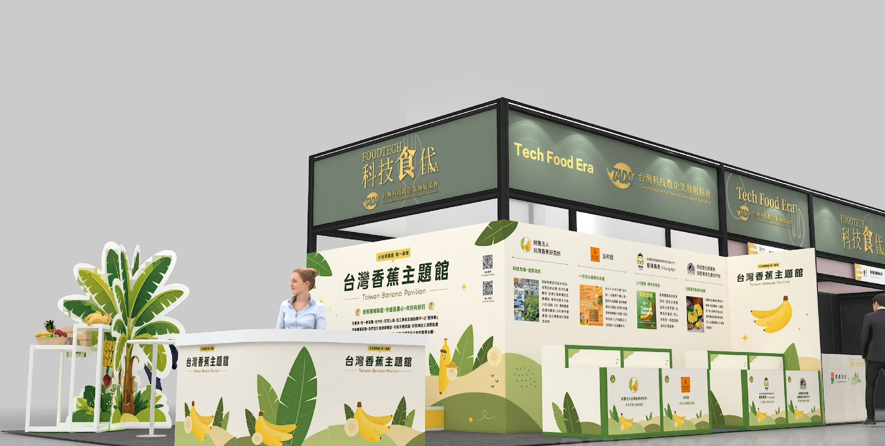
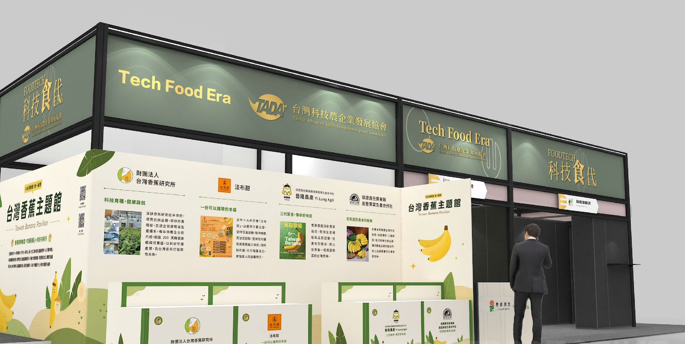
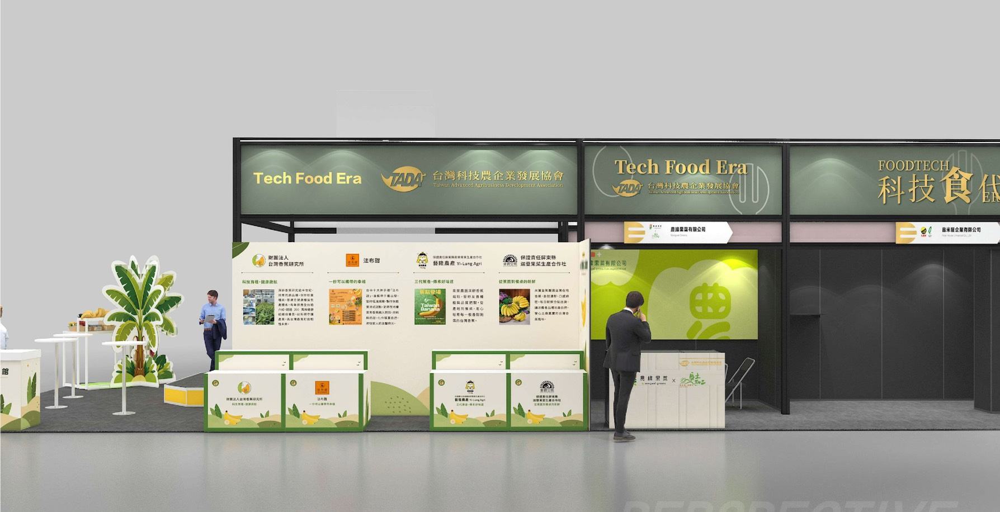
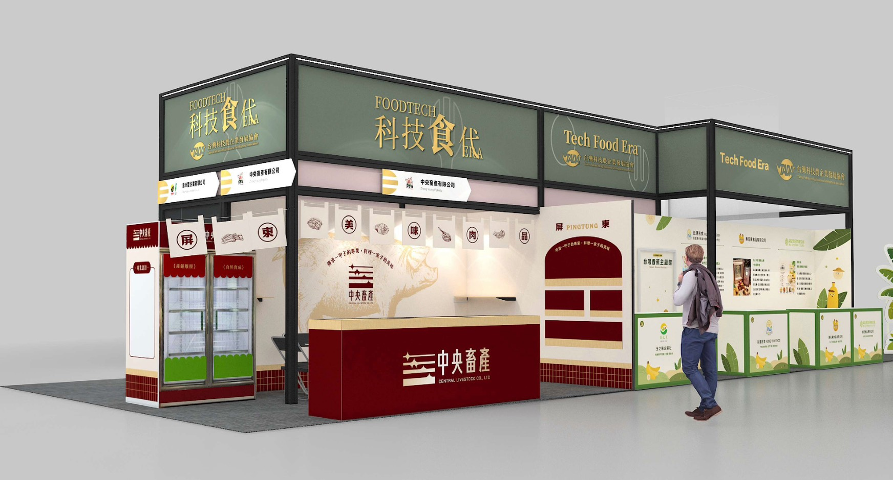
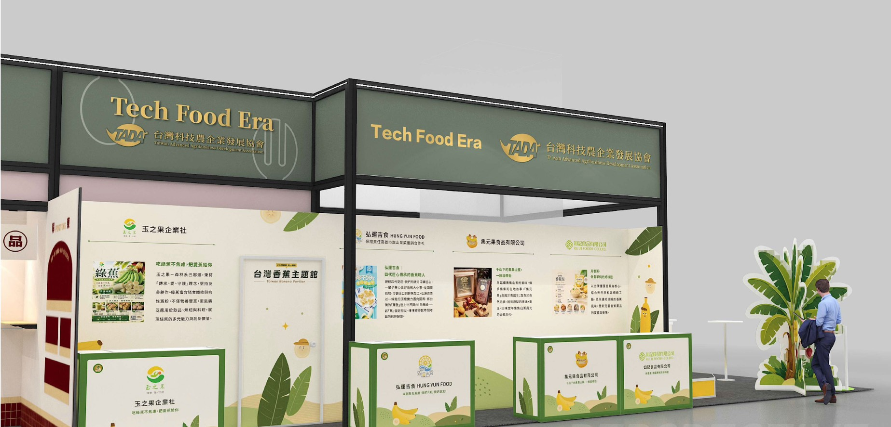
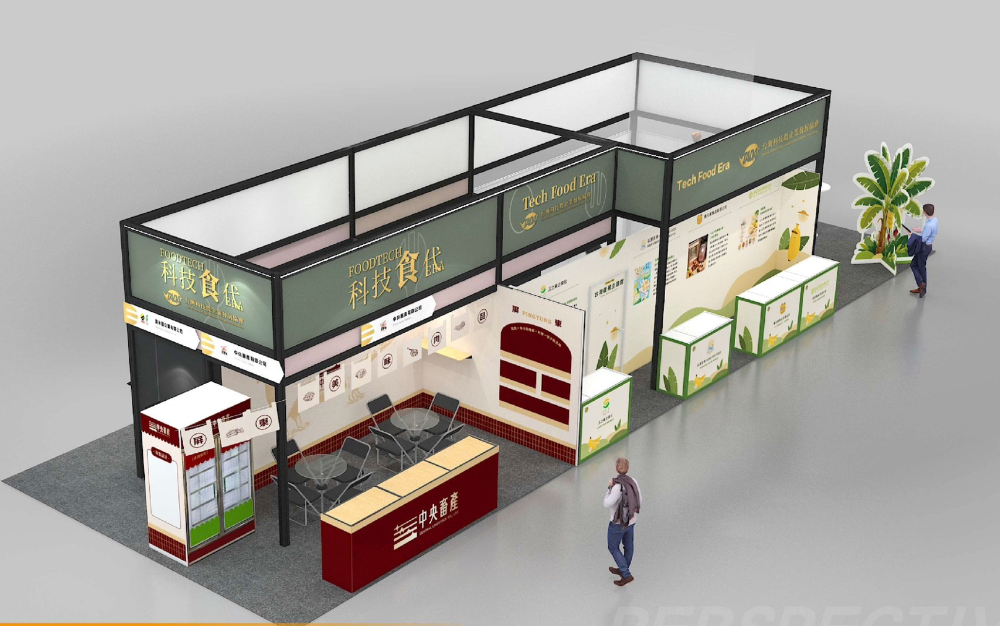
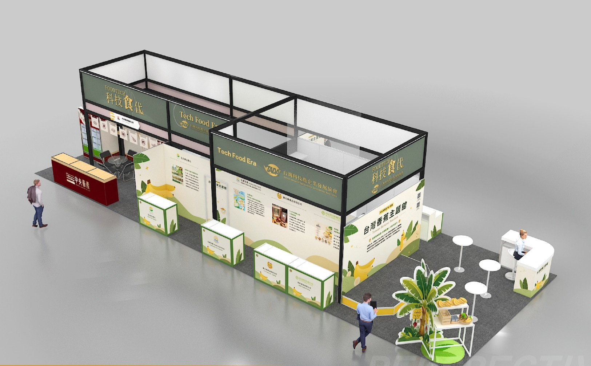
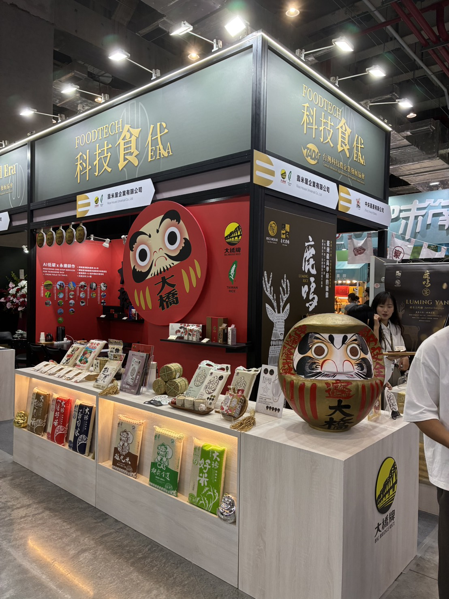

台灣科技農企業發展協會（TADA）以「科技食代 Tech Food Era」為主題，攜手多家會員企業聯合參加 2026 台北國際食品展（FOODTECH），設立「台灣香蕉主題館」，展示從科技育種、品牌加工到行銷通路的完整農業產業鏈。
本次聯合展館分為兩大主題區：左側由中央畜產有限公司主導，以屏東優質豬肉為核心，呈現「養牛一甲子的專業，料理一家子的美味」的品牌精神；右側為台灣香蕉主題館（Taiwan Banana Pavilion），匯聚多家專注香蕉產業的會員企業，共同展示台灣香蕉的科技實力與品牌魅力。
壽米屋企業有限公司展出旗下「大橋牌」優質台灣米系列，並以 AI 低碳永續耕作技術為主軸，呈現從田間到餐桌的數位農業轉型成果。



科技食代聯合館全景（展前設計圖）
香蕉主題館由以下成員共同展出，涵蓋科技育種、加工食品、產地直銷等多個面向：
各參展廠商以「三代蕉香，傳承好味道」為共同精神，從科技育種、健康啟航到品牌加工，全方位展現台灣香蕉產業的深度與廣度。





壽米屋企業有限公司展位現場實況・大橋牌台灣米系列